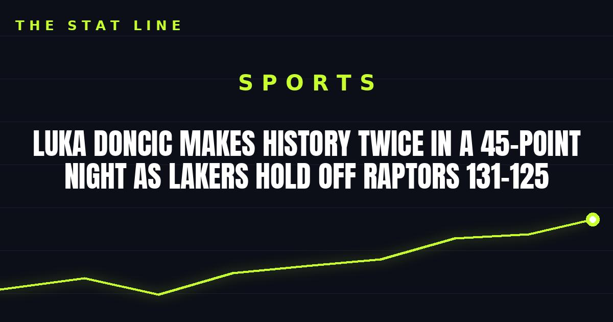

Luka Doncic Makes History Twice in a 45-Point Night as Lakers Hold Off Raptors 131-125
Luka Doncic poured in 45 points with 15 rebounds, five steals, and eight threes, making first-half history twice as the Lakers beat Toronto 131-125.

Luka Doncic did not just fill up the box score on Sunday night. He filled up the history books before halftime, then kept going until he had 45 points, 15 rebounds, and a 131-125 Lakers win over the Toronto Raptors at Crypto.com Arena.
The final line: 45 points on 12-of-23 shooting, 8-of-12 from three, a perfect 13-of-13 from the line, plus 15 rebounds, six assists, five steals, and a block in 35 minutes. The triple-double watch that followed him through the night fell short on assists, finishing at six. The scoring night did not need it.
A first half for the record books
Doncic came out like a man settling something. He had 16 points in the first quarter alone, along with four rebounds, three assists, four steals, a block, and two charges drawn, staking the Lakers to a 36-23 lead. By halftime he had 24 points, eight rebounds, four assists, and a career-high five steals in a half, going 6-of-7 from deep, and the Lakers led 66-54.
That half made history twice over. Doncic became the first point guard in NBA history with five steals and five three-pointers in a half, and the first player in the play-by-play era, which dates to 1997-98, with 20 points, five rebounds, five three-pointers, and five steals in a half.
He stayed hot after the break. The Lakers won the third quarter by 10 to break the game open, and Doncic was at 37 points, 11 rebounds, five assists, and five steals near the end of the third, with quadruple-double chatter starting to build. The assists never quite came, but the scoring never stopped either, and when Toronto cut a big lead down to single digits in the fourth, Doncic and Austin Reaves made the buckets that restored order.
The bounce-back
This was a response game. The Lakers had just been embarrassed 112-95 at Golden State on Friday, blowing an early lead, and Doncic had scored 37 in that loss. Sunday was the first night of a back-to-back, with the Miami Heat visiting Monday, and the Lakers needed to bank this one early. They did, improving to 5-2.
Doncic entered the night leading the league in scoring at 36.2 points per game, and his recent run has been eye-catching: a season-high 52 against Utah, 41 against Portland, then 37 against the Warriors, then 45 against one of the East's best defensive teams. The one note of caution from the night: seven turnovers, a reminder that the whole offense still runs through him, for better and worse.
Toronto, which had trailed by double digits most of the night, made it interesting late but never got all the way back. The Lakers closed it out, and Doncic walked off with 45, 15, and two pieces of history from a single first half.
Sources
• ESPN box score, Raptors at Lakers, November 1, 2026 (event 401909906)
• USA Today game report, November 1, 2026
• Lakers Nation postgame recap, November 1, 2026
• ClutchPoints halftime report, November 1, 2026
Gear up: Fanatics